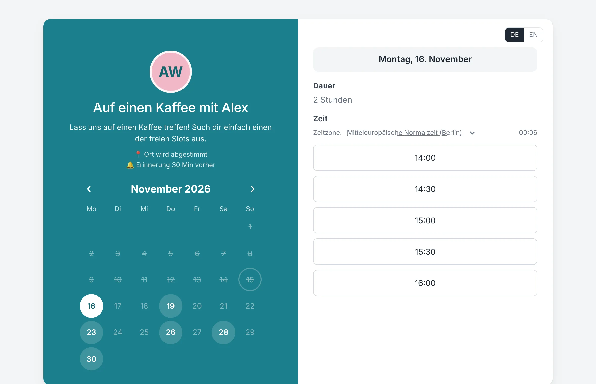
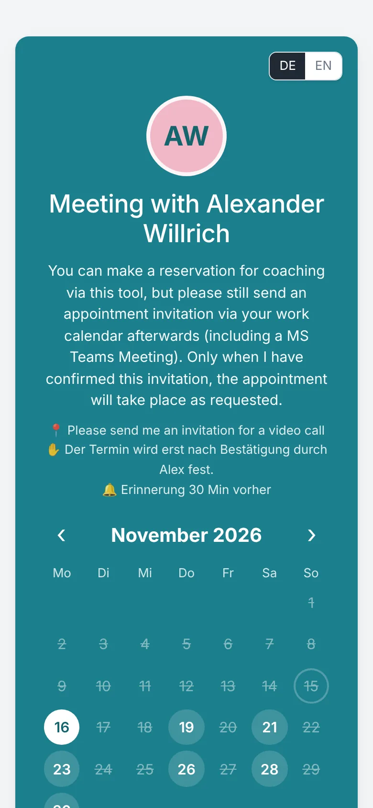
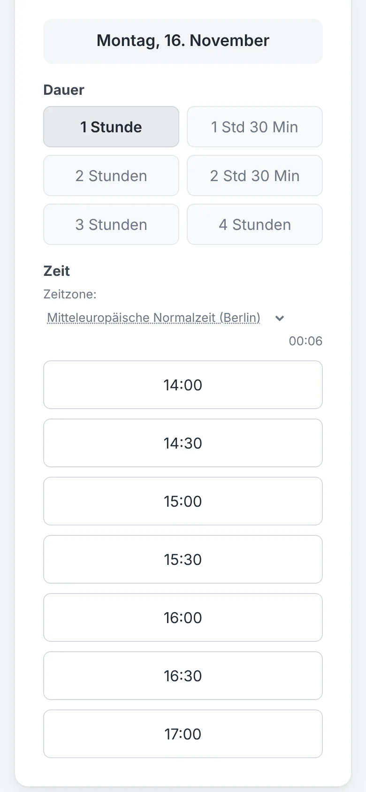
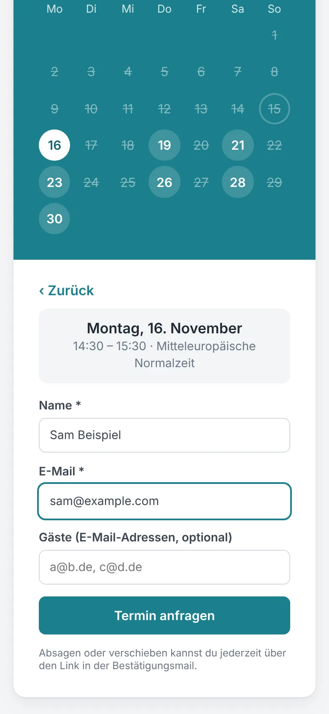
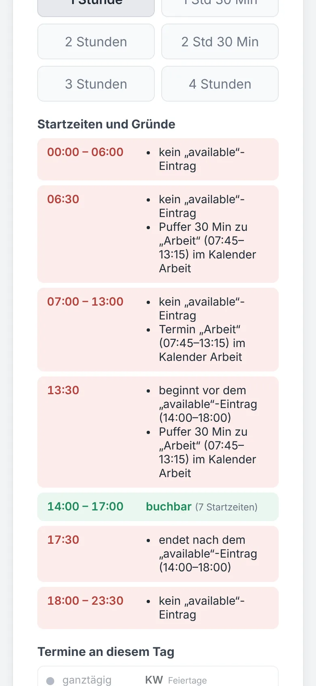
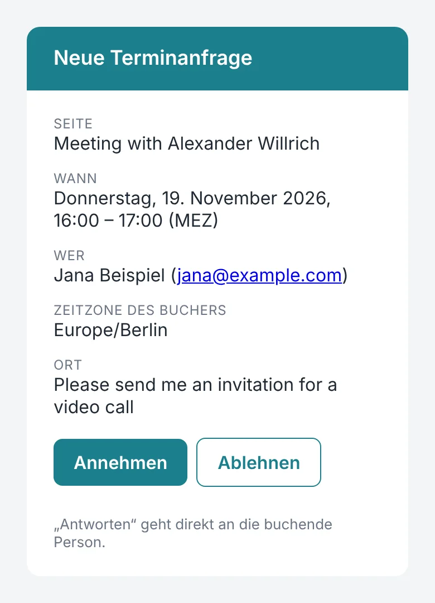
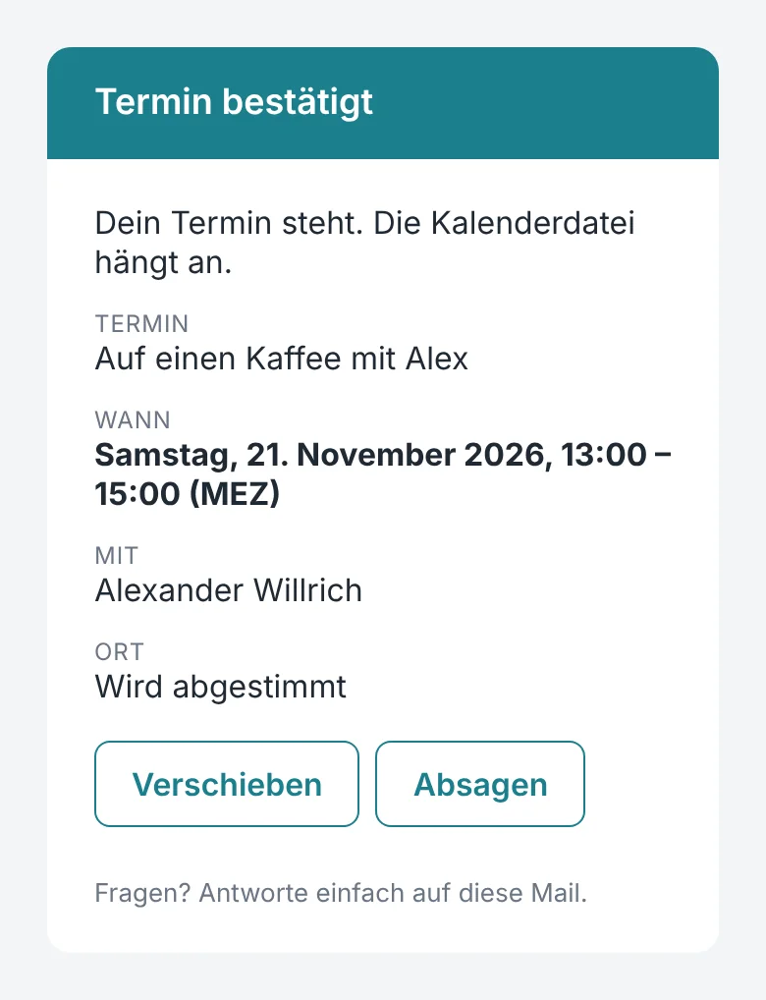
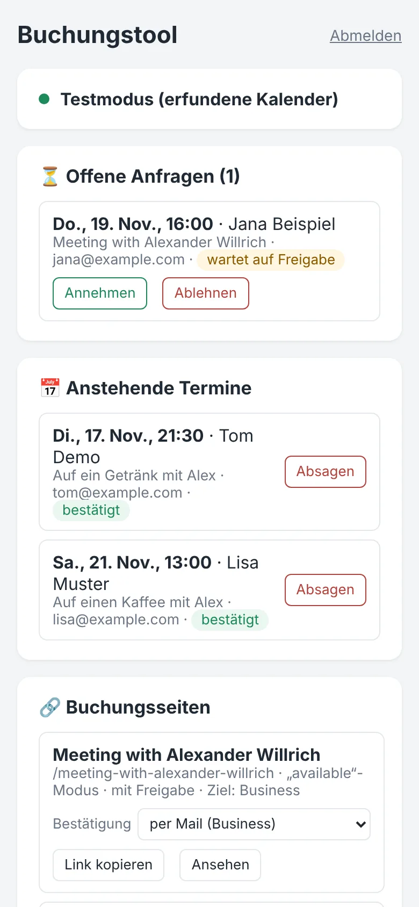

Termine buchen. Ohne Abo.
Mein eigenes Buchungstool. Leute wählen einen freien Termin, und er landet direkt in meinem Google-Kalender. Gebaut an einem Abend zusammen mit Claude, als Ersatz für ein Koalendar-Abo. Läuft für 0 € im Monat.
Alle Bilder zeigen Demo-Daten.


Link schicken. Zeit wählen. Fertig.
Für jeden Anlass gibt es eine eigene Buchungsseite: Kaffee mit Freunden, ein kurzes Meeting, ein Briefing für einen Bühnenauftritt. Jede Seite hat ihre eigenen Dauern, Regeln und ihren eigenen Zielkalender.
Wer bucht, sieht nur die Zeiten, die wirklich frei sind. Automatisch in der eigenen Zeitzone und wahlweise auf Deutsch oder Englisch, weil ich auch mit internationalen Kund:innen arbeite.


Zwei Wege, frei zu sein.
Pro Seite entscheide ich, wie das Tool meine freien Zeiten findet. Geprüft werden dabei nur die Kalender, die zählen. Der Konzertkalender, den ich mit Freunden teile, blockiert zum Beispiel nichts.
Nur, wenn ich es sage
Ich trage mir Blöcke mit dem Titel „available“ in einen versteckten Kalender ein. Gebucht werden kann nur dort, und nur, wenn nichts anderes drüberliegt.
Überall, wo Platz ist
Ich lege Zeitfenster fest, zum Beispiel Mo–Fr 9–18 Uhr. Das Tool schaut in meine Kalender und bietet die Lücken dazwischen an, mit Puffer und Vorlauf.
Warum ist 9 Uhr nicht frei?
Mein Lieblingsfeature. Mit einem Schalter zeigt jede Buchungsseite für mich den ganzen Tag und schreibt zu jeder Startzeit den genauen Grund dazu: „Termin ‚Arbeit‘ im Kalender Arbeit“, „Puffer 30 Min“, „Mindestvorlauf 12 Std“.
Darunter stehen alle Termine des Tages mit dem Hinweis, ob sie blockieren, ignoriert werden oder ein Verfügbarkeits-Fenster sind. Rätselraten war gestern.

Erst prüfen, dann zusagen.
Bei Business-Terminen ist nichts sofort fix. Ich bekomme eine Mail mit „Annehmen“ und „Ablehnen“, und erst nach meinem Klick steht der Termin im Kalender. Bis dahin ist die Zeit für die Person reserviert.
Danach gibt es eine Bestätigung mit Kalenderdatei, eine Erinnerung vor dem Termin und Links zum Verschieben oder Absagen, auf Wunsch mit Grund. Private Termine laufen statt per Mail über eine ganz normale Google-Einladung.


Alles auf einen Blick.
Offene Anfragen, anstehende Termine, alle Buchungsseiten und die Kalender-Einstellungen. Lösche oder verschiebe ich einen Termin direkt in Google, zieht das Tool von selbst nach.
Reißt die Verbindung zu Google einmal ab, bekomme ich sofort eine Alarm-Mail.

Vier Schritte bis zum Termin.
Link schicken
Ich schicke den Link zur passenden Seite, mit einem kurzen Briefing.
Zeit wählen
Die Person sieht nur echte freie Zeiten und fragt eine an.
Annehmen
Ich prüfe und sage mit einem Klick in der Mail zu.
Steht im Kalender
Der Termin landet bei mir, die Bestätigung bei ihr.
Klein, schnell und gratis.
Das Tool läuft auf Cloudflare, liest und schreibt meinen Google-Kalender und verschickt Mails über Resend von meiner eigenen Domain. Die Logik, die freie Zeiten berechnet, ist durch automatische Tests abgesichert, inklusive Zeitumstellung und Gästen in anderen Zeitzonen.
Aus einem Abo wurde ein eigenes Tool.
Genau so, wie ich es brauche, und mit einem Troubleshoot, das kein gekauftes Tool so hat. Als Nächstes kommen das Bearbeiten der Seiten im Admin und die Einbindung in meine Website.